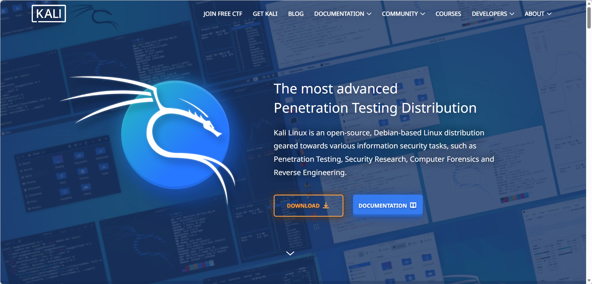
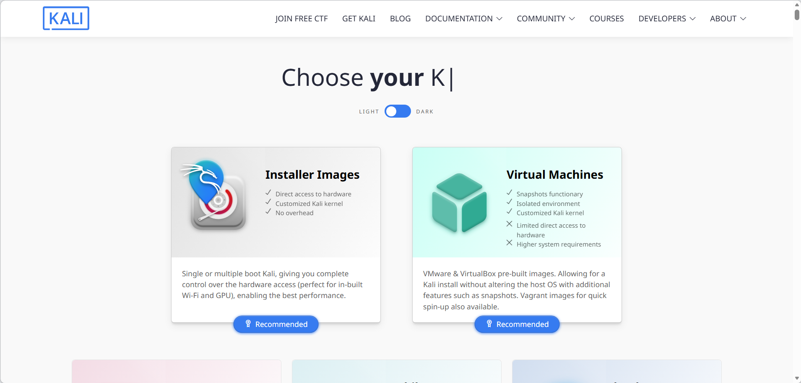
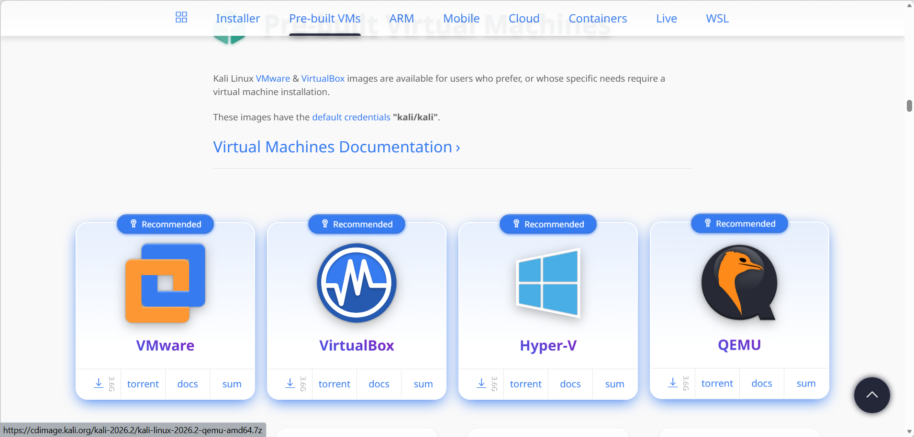
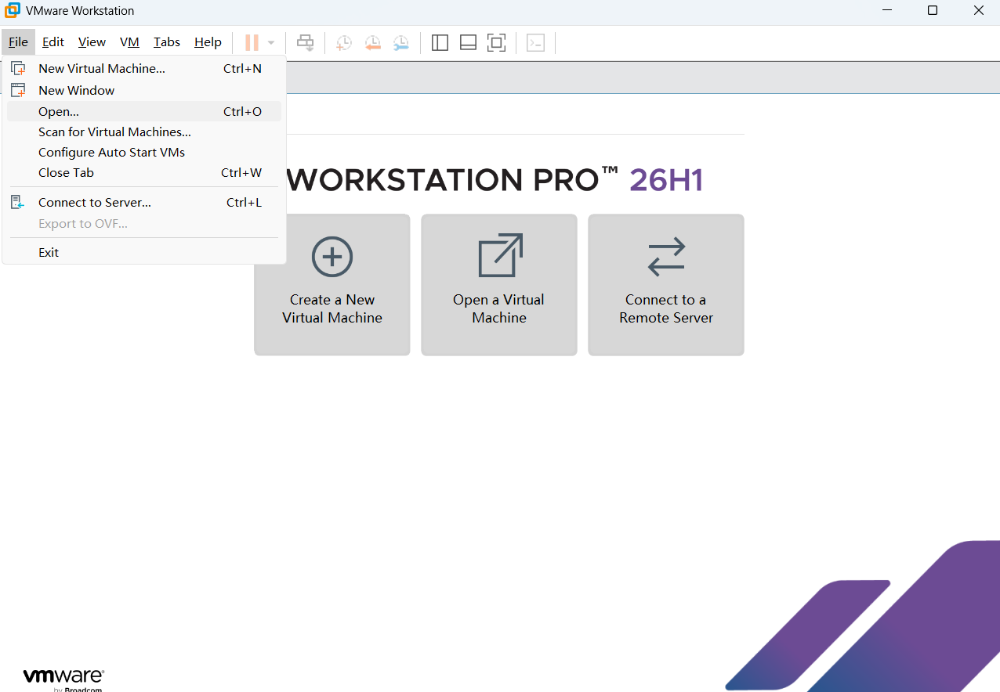
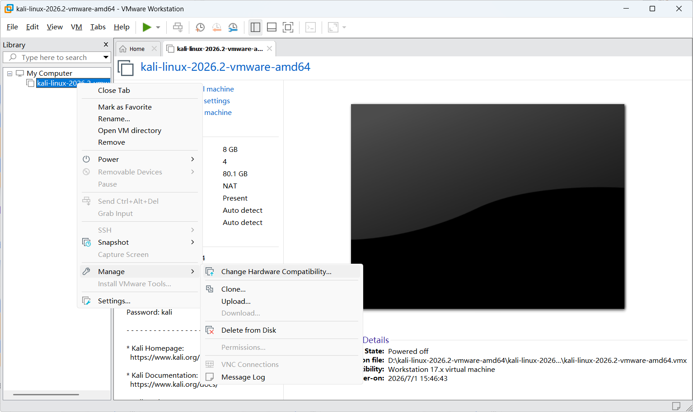
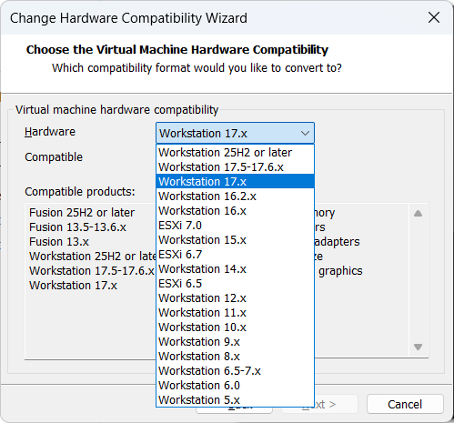
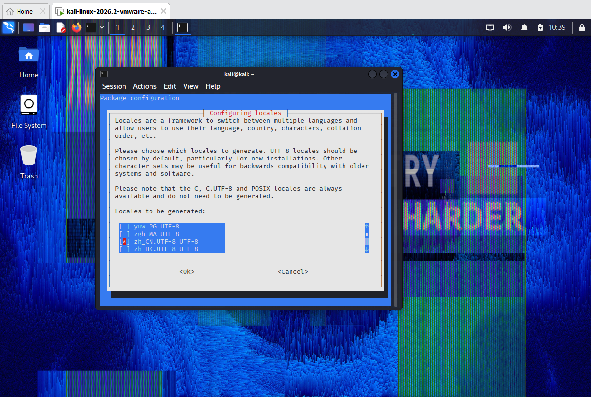
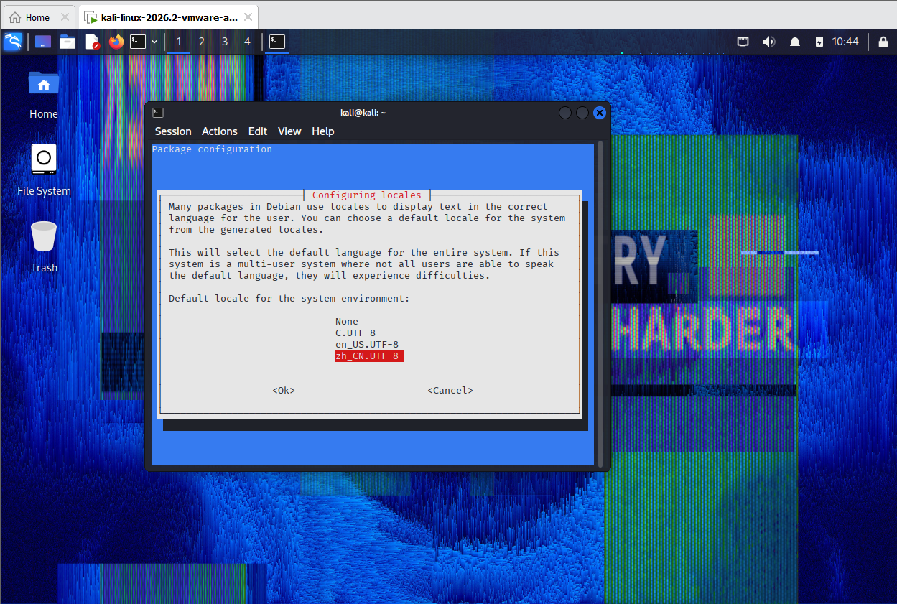
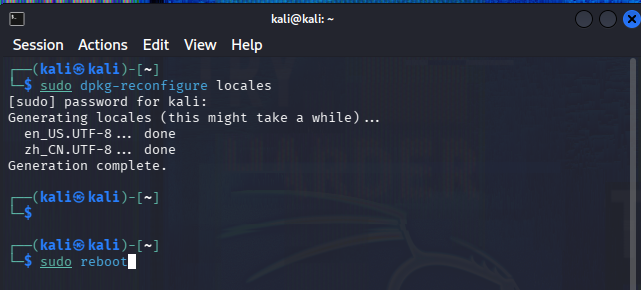
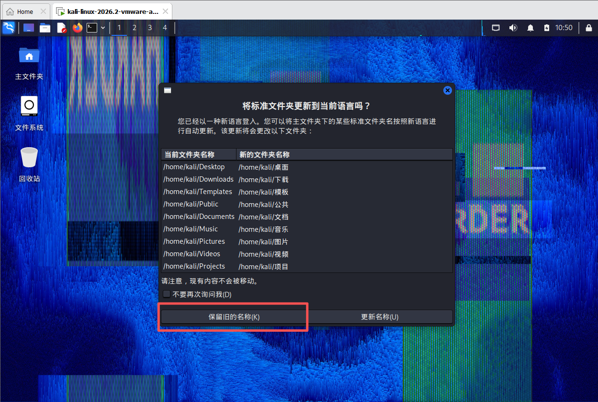

1、下载
打开官网 Kali Linux | Penetration Testing and Ethical Hacking Linux Distribution

点击 DOWNLOAD
会有两种形式，左边 installer images 是下载 .iso 的镜像文件，右边 virtual machines 是虚拟机本体压缩包。

这里以下载右边虚拟机为例

选择对应的虚拟机（这里以 VMware 为例），点击下载图标开始下载。
下载好后解压。
2、安装
打开 VMware，选择 File，点击 Open

进入到解压后的文件夹，选择后缀 .vmx 的文件打开。
调整好文件位置、CPU、内存大小，然后打开。
账号密码：kali/kali
3、解决没有鼠标光标
可能会出现没有鼠标光标的问题
需要先关闭 Kali，右键 Kali 虚拟机 → manage → change hardware compatibility

点击 next，将 Hardware 栏换成 workstation 17.x

重新启动 Kali，光标就回来了。
4、汉化教程
打开命令行输入命令
sudo dpkg-reconfigure locales
输入密码跳转到以下页面，滚轮或者下键往下翻找到中文 zh_CN，按空格选中，会出现星号代表已选中，回车。

再选择 zh_CN，回车。

完成后重启

输入账密后进入桌面会弹出操作框，选择保留旧的名称。

汉化完成。